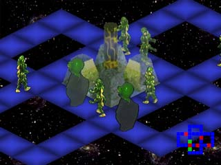

|
|
A Sprite Engine...
from a Slightly Different Point of View
Kyra is a simple, fully featured, industrial strength Sprite engine written in C++. It is built on top of SDL and has been tested on Windows and Linux. It is provided free for open source projects under the GPL and LGPL.

For more screen shots, take a look at the Demo page.
What is a Sprite Engine? A Sprite Engine is the drawing and rendering component of 2D and quasi-3D games. Examples of this kind of game are Civilization, Donkey Kong (classic arcade), Pharaoh, Zeus, Warcraft, Diablo, Frogger, and Pirates!, among many others. It is so called because the "characters" or "little men" are referred to as "sprites".
Simple and Easy to Use. Kyra has a clean and simple C++ interface. Or at least as simple as an engine can be. It comes with several examples to get you started, as well as full documentation for the API and the tool chain.
Fully Featured. It is fully featured, supporting top-down, side, and isometric rendering. It supports the 'Sprite' as its basic type, but also supports Tiles and user-drawn Canvases. It can draw to a traditional bitmap surface, and supports OpenGL hardware acceleration.
Industrial Strength. Kyra has a complete tool chain including a sprite editor and encoder. It's fast and capable, with specialized code for rendering and rectangle updates.
...From a Slightly Different Point of View. But Kyra does some things differently. It supports color transformations and alpha blending (!). All objects in Kyra are inserted into a containment hierarchy, and children are transformed by their parents. So a complex object can be moved simply by changing the coordinates of the top level object, and color transformations and alpha transformations work the same way. The alpha blending can be applied at a per-image or per-pixel level.
Objects can be scaled up or down when drawn, or scaling can be pre-cached. The screen can be split into sub window views, and each view has its own object transformations.
Use as is. Kyra is currently working and ready for use. You can put it into your programs and start using it now. It has been used enough to mature some and be already bug fixed. On the other hand, if you're someone who likes to get involved, there are still optimization and feature opportunities in the code.


Download. Download the source code for Linux or Windows.
Installation. Instructions on installing the engine and running the demo files.
Demo. About the Demo, how it works, its command line options, and how to do performance testing.
Build. How to build the tools and use Kyra in other projects.
Tutorial. A breakdown of a simple example.
Tools. How to use the various tools, components of the tool chain, and an example of how the tools are used to construct the demonstration files.
Engine. How the Sprite Engine works from the wide perspective.
License. What is the GPL? Can it be licensed for commercial use?
API. The documentation of the Engine from the micro-perspective. An explanation of the classes and methods.
Kyra is now hosted on SourceForge!
Python Binding
If you are interested in a Python binding for Kyra, check out PyKyra!
Want a 3D engine without all the polish and finish in Kyra? :-) Check out Lilith, a 3D engine in development.
Thanks!
I have enjoyed writing Kyra and look forward to your feedback. Please feel free to send comments and questions to leethomason@mindspring.com. Access to the email list, discussion board, and bug submission are on the SourceForge Project page. If you have a project that uses Kyra, add it to the "Kyra Projects" list, on the SourceForge pages.
Thanks very much to the contributors to the project.
- lee